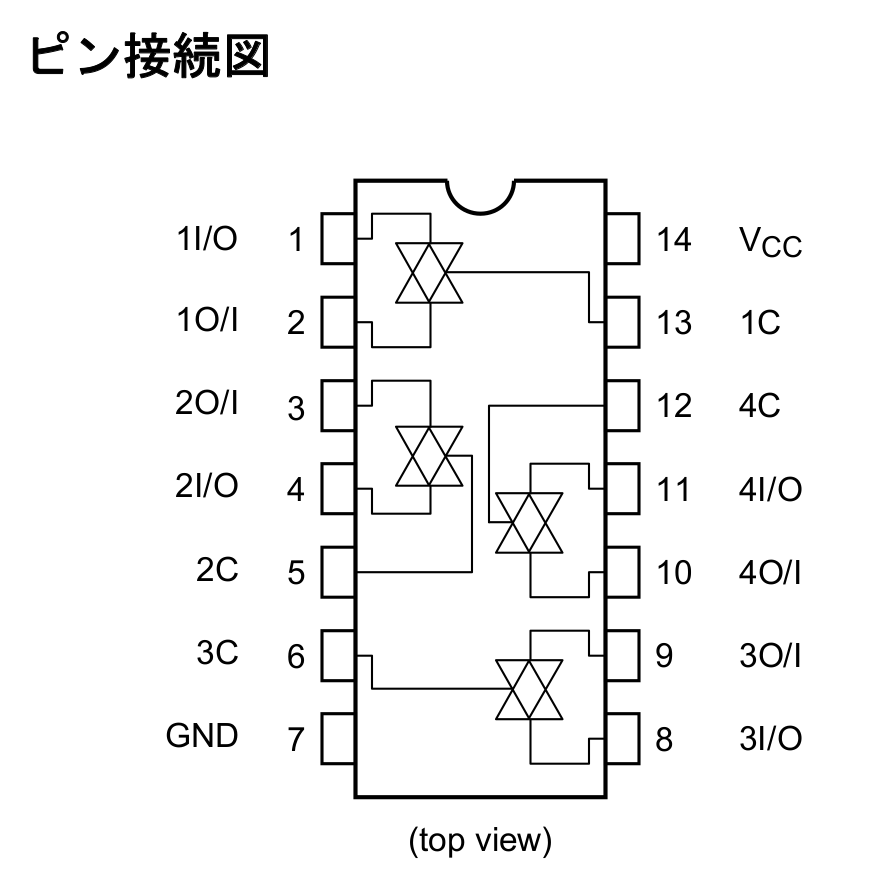
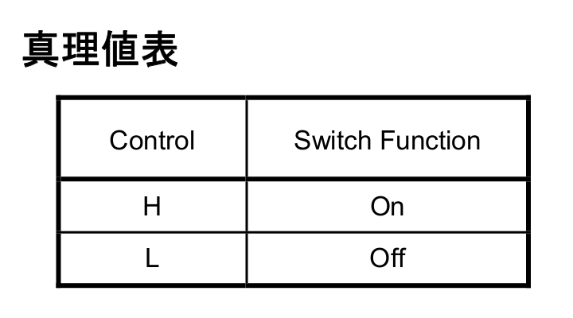

ArduinoのPWM信号をアナログスイッチで非同時マルチチャンネル音源として使う
4回路入り CMOSアナログスイッチ TC74HC4066AP(F)｜電子部品・半導体通販のマルツ
アナログスイッチというものを買って試してみました。 その名の通りアナログ信号をスイッチングするICです。 このICには4回路入っています（4つスイッチがあります）。 アナログ信号（PWM信号）源としてArduino UNO（互換品）を使いました。
PWM
PWM（Pulse Width Modulation）はパルス信号の幅（デューティ比）を変化させる変調のことです。 ここでは、スイッチのON/OFFの比率を調節する形で、 デジタルパルス信号の平均電圧を可変にする（擬似的なアナログ信号を作る）ために使います（参考：パルス幅変調 - Wikipedia）。
[ デューティ比 = \frac{{\rm ON} の時間（=パルス幅）}{パルスの周期} ]
パルス幅 1μs、パルス周期 4μs（つまりON 1μs、OFF 3μsの繰り返し）のとき、デューティ比は0.25になります（参考：デューティ比 - Wikipedia）。
デューティ比 (D) 、パルス電圧 (V) のとき、平均電圧 (V' = D V) となります。
ArduinoのPWM制御
ArduinoにはPWMを利用したアナログ出力関数（analogWrite - Arduinoリファレンス）があります。
Arduino PWM 周波数 高速化 : LabVIEW info. Sharing 新館、 Arduinoの高速化 | なんでも独り言、 Arduinoプログラムの高速化 - Qiita を参考にしていきます。
まず今回の内容とはあまり関係ないですが、 Arduinoの標準的な関数を使ったGPIO制御は（安全で楽、また互換性が高いですが）遅いということで、 Arduinoの本体であるAVRマイコンATmegaのレジスタを直接操作することで、高速化が見込めるらしいです。 注意点や詳しいことはリンク先の参照をお願いします。
また、ArduinoのデフォルトのPWM制御は、 動作クロックに対する分周比がだいたいのピンで64になっていて、 動作クロック16MHzのUNOの場合、約490Hzのパルスを使ったPWMになっているということです（オシロがほしいです..）。 これもタイマー関連のレジスタを直接操作して分周比を変更することで、PWMの周波数を変えることができます。
今回はPCで再生するような音声信号をPWMで再生します。よくある音声のサンプリング周波数は44100Hzまたは48000Hz（この周期で振幅＝電圧が変化する）で、これを再生するには490Hzのパルスでは遅すぎます。
音声データの設定
【Arduino】WAVまたはMP3ファイルを再生する - おもちゃラボを参考にしていきます。
今回は音声データをArduinoのプログラムメモリに直接載せて再生することにします。 手元のArduino UNO互換機ではプログラムメモリ容量32256 bytesだったので、 音声データを載せるにも再生プログラムと合わせてこの範囲に収める必要があります。
そこで割とよく見るやり方で、データ量を減らすためにサンプリング周波数を8000Hzに落として、生の8bit波形を直接ソースコードに埋め込んでいきます。PWMの周波数が十分大きく、巨大な波形データを何らかの方法で格納できればサンプリング周波数を上げることができそうですが、今回はこの形でいきます。
シリアル通信で波形データをリアルタイムに送るのは遅すぎて無理と思われるので、 そのような場合にはMicroSDカード（TFカード）から読み出しながら再生するのがよさそうです。 シリアル通信経由で音源データをあらかじめ書き込むためのAPIくらいは作れるかもしれないですね。
音源には著作権の切れているハレルヤ・コーラスの頭近くから2秒分を切り出したものを使ってみます。生の波形（handel_2s.raw）はモノラル 8000Hz 2秒 振幅8bitで16000 bytesになります。
- File:Messiah Hallelujah Chorus 1916.ogg - Wikimedia Commons
- handel_2s.wav（44100Hz）
- handel_2s.raw（8000Hz、8bit）
音声データは3番ピン（Timer/Counter2、OCR2B）から出力することにします。
xxdコマンドが使える場合、xxd -i handel_2s.rawでunsigned char handel_2s_raw[]を定義するCコードが出力されます。この頭にconst PROGMEMを付けてArduino用のソースコードに貼り付けます。
単チャンネル再生
基本的には先に挙げた記事と同じことをしていきます。シリアル通信を入れると遅くなってしまうので、動作確認などで入れた場合は最終的には外したほうがいいです。
const PROGMEM unsigned char handel_2s_raw[] = {
// 略
};
const unsigned int handel_2s_raw_len = 16000;
int counter = 0;
void setup(void) {
pinMode(3, OUTPUT);
TCCR2A = _BV(COM2B1) | _BV(WGM21) | _BV(WGM20);
TCCR2B = _BV(CS20);
}
void loop(void) {
OCR2B = pgm_read_byte_near(&handel_2s_raw[counter]);
counter += 1;
if (counter > handel_2s_raw_len) counter = 0;
delayMicroseconds(125);
}
Arduinoの3番ピン・GNDのとスピーカの端子（ダイナミックスピーカの場合はPAM8012やPAM8403などのアンプがほしい、圧電スピーカ・イヤホンなどの場合は不要）を接続する。
多チャンネル再生
回路の設定
図をTC74HC4066Aのデータシートから引用していきます。

とりあえずArduinoの4、5、6、7番ピンをアナログスイッチのスイッチングに使います （ラインデコーダなんかを使って2bitにしてもよさそうですが）。 これはデータシートから、それぞれIC側の13、5、6、12番ピン（1C、2C、3C、4C）に接続します。

各ピンがHighのときにn I/Oがn O/Iに出力されます。例えば、1C=Highのとき、1 O/I = 1 I/O（アナログ信号）になり、1C=Lowのとき、1 O/I=0 Vになります。